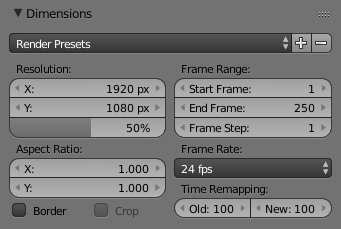

输出选项¶
渲染进程中的第一步是确定和设置输出选项。这包括渲染大小、 帧速率、 像素长宽比、 输出位置和文件类型。
Dimensions Panel¶

尺寸面板。
- 渲染预设
- 为电视和荧幕预设常规格式。
- 分辨率
- X / Y 坐标轴
- 图像中水平和垂直方向的像素数。
- 百分比
- 通过滑动条移动可以增加或减少X/Y轴的相关数值。这常用于预览同等比例下的图像渲染最终效果。
- 纵横比
旧款电视机可能存在非方像素情况，这主要用于控制像素在各自轴上的形状。但这种设定将导致 预失真，图像在电脑屏幕观看时是拉伸扭曲的（而电视观看却是正常的）。因此您在渲染操作时选择恰当的像素宽高比，从而避免图像比例改变，否则会导致画面质量被降低。
更多关于像素长宽比的信息，请参考 视频输出。
- 框选
您可以仅渲染画面中的一小部分而非整个画面，具体操作是：在摄像机视野中，按下键盘
Ctrl-B的同时，用鼠标拽矩形框去框选您想要渲染的区域；减少框选范围的快捷键是Ctrl-Alt-B。Note
在抗锯齿处理中，性能中的“保存缓存”按钮和"全采样"不可用。
勾选“裁剪”将会依据“边框”属性的值去剪裁已渲染的图像，而不是渲染一个黑色区域。
- 帧范围
- 为 渲染动画 设置“开始”和“结束”帧。“帧步”用于设置渲染或回放各帧时，向前跳过的帧数。
- 帧率
- 对于 动画 来说，帧率就是每秒钟显示的帧数。
- 时间映射转换
- 用于重映射置动画的长度。
输出面板¶

输出面板。
这个面板用于设置动画的渲染帧的存储地址和存储画质。
- 文件路径
选择渲染帧的存储区。
渲染动画的过程中，帧数是显示在文件名的结尾，用四位数填充表示(例如
image0001.png)。你可以在文件名的任意地方，用#号来设置指定的的填充号位数（例如：image_##_test.png转换为image_01_test.png)。此设置将扩展 相对路径，其中
//前缀表示当前blend文件的目录。- 覆盖
- 渲染时覆盖现有文件。
- 建立文件存储区
- 渲染的过程中将创建空占位帧。
- 文件扩展名
- 为每一个输出文件的类型添加相应的文件扩展名。
- 缓存结果
- 保存渲染图像并传递到硬盘驱动器上的临时位置，形成多图层EXR文件。这种按序读取的方式将提高合成器的读取性能，尤其是在繁重的影像合成过程中。
- 输出文件格式
选择保存的文档格式。基于所选的保存格式，其他诸如通道、位深以及压缩水平等选项是可选的。
渲染输出图像见: 保存图像 ，渲染为视频见 rendering to videos
- 颜色模式
选择保存图像使用的色彩格式。注意， RGBA 并不适用于所有图像格式。
BW, RGB, RGBA
Hint
简单的集群渲染平台
获取多个机器终端用于共享处理批量的渲染工作，有一个简单粗暴的办法：
- 在网络文件系统设置一个共享目录。
- 在输出面板上取消勾选 覆盖 ，勾选 建立文件存储区 。
- 只要您愿意，渲染目录下的机器终端想启用多少就启用多少